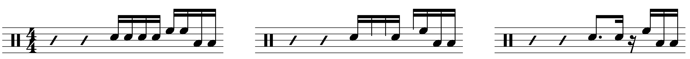

Transcription(s): The Nick Mason Fill Recipe
Posted on March 16, 2022

As I wrote last week, I’ve been listening to some Pink Floyd lately, as I often do at the start of the year. I regard Pink Floyd as one of the best bands out there, mainly because of their songwriting, vision, and ambition… but I’ve struggled to find a way to talk about them on the site. I don’t want to pick apart one of their tunes from a compositional perspective, since other (more knowledgable) people have already done that better than I could. And I don’t want to do a big transcription excerpt of the drumming on a Pink Floyd tune.
I have a bit of a love/hate thing going on with Nick Mason. In some instances, he’s a very capable drummer (see: his drumming on “Us and Them”, and the drumming on “Echoes” from the Pompeii concert). In contrast, however, he has moments like that god–awful rim click on “Money”, as well as the infamous story of him not being able to hang with the time signatures changes on “Mother” (Jeff Porcaro ended up drumming on that tune, although considering what a mess The Wall was, it’s possible that, in another era, Roger would have just hopped on the Linn Drum and called it a day).
Technically speaking, I tend to evaluate a drummer based on their vocabulary (i.e. their signature moves). Nick didn’t really play anything all that exciting with Pink Floyd, but over the years, I have noticed something interesting that Nick does with his fills. I call it the “Nick Mason Fill Recipe”.
The idea is pretty simple — just take a straightforward fill around the drums, and then, cut out some random notes:
Nick really enjoys using these syncopated fills. I can’t say for sure, but if I had to guess, I’d say that Nick used a method like this to cook up some of these licks (this is similar to what John Riley calls “rests within the phrase” in The Art of Bop).
I decided that I would have to explore different transcription strategies for something like this. So today, I’m presenting some of the best examples of these fills throughout Pink Floyd’s glory years: from Meddle to Animals. I wanted to finish out the decade with The Wall, but I had two problems: first, The Wall is not a good album, and second, this project was kind of a nightmare, which is why I needed a few extra days to finish it up. The problem mainly was MuseScore, which has no advanced functionality for typesetting to make something like this look nice. (It also just has limited tools in general for making things look nice — I had lines of music randomly jump to the next page with no way to get them back without deleting and reentering them. Still, I’m not paying for Finale/Sibelius/Dorico).
I did my best to parse out the “original” versions of each fill, usually going for the simplest option (I used accents to help show the exact notes that make up the fill). Some of the orchestrations change a bit from version to version. Also note that, for slower songs (a.k.a. most of them), the 16th’s are played slightly swung. Of course, anything based around triplets should be played swung.
If the Pompeii concert is anything to go off of, Nick was using four toms at this point. But I think he just sticks to the rack toms and one floor tom on these records. I couldn’t find a lot of good info about what he used in the studio, and his toms tend to blend together, so I used the panning to help figure it out. (I must mention that I find it hilarious engineers took the time to mic both bass drums since I don’t think Nick has played a note of double bass in his life. If he has, it was surely an accident).
This fill strategy has its limits — for fast tunes, the syncopations will not sound good. But it could be a fun changeup, and reverse engineering some of these fills actually created some interesting patterns in their own right.
Tags: 2022 • Transcription • Nick Mason • Pink Floyd